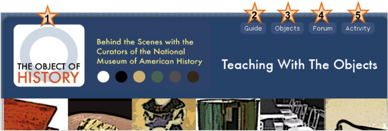
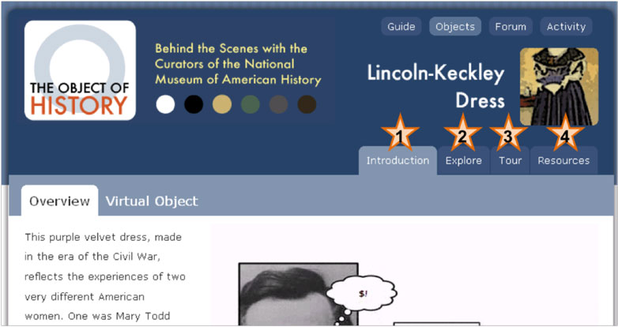

Using The Object of History Site
Overview
Welcome to the Object of History: Behind the Scenes with the Curators of the National Museum of American History (http://objectofhistory.org). This site was created as a way for students and U.S. History teachers to access the Museum’s collections and the expertise of the historians, called curators, who care for the objects. The site is designed to improve students’ understanding of the featured topics and to improve their ability to understand material culture as historical evidence. Students can explore artifacts, documents, and interviews related to the selected object and create virtual exhibits by including various sources and personal commentary.
Teacher Pages
Prepare to use this site with your class by visiting the Teacher Materials and Resources page (http://objectofhistory.org/teachers/). Instructional videos for teachers and students are included on this page. By clicking on the pictures of featured objects, you can access lesson plans, links to online resources, and related standards of learning.
Object Pages
From the homepage (http://objectofhistory.org/), students can click on an object to open a page with four tabs. The materials presented in the tabs Ð Introduction, Explore, Tour, and Resources Ð prepare students to complete the final activity, designing a virtual exhibit. A tutorial is included to guide them through the activity (http://objectofhistory.org/content/public/tutorials/StudentTutorial.mov).
Anatomy of the Webpage Header

The header on each page features the following links:
1-Logo
The logo returns you to the Web site’s homepage (http://objectofhistory.org/)
2- Guide
A guide to material culture which explains how historical artifacts can help students understand events and ideas from the past
3- Objects
Featured objects include:
- The desk Thomas Jefferson used while writing the Declaration of Independence
- The gold nugget that started the California Gold Rush in 1849
- A dress made for First Lady Mary Todd Lincoln by former slave Elizabeth Keckley
- An electronic voting machine from 1898
- A section of a Woolworth’s lunch counter where an important Civil Rights Sit-in that spread across the country began in 1960.
- A short-handled hoe used by migrant workers after WWII that became a symbol of unfair working conditions and was later banned.
4- Forum
Archived audiocasts of curators and historians answering questions about the featured objects
5- Activity
An interactive tool that allows students to create and publish virtual exhibitions
Anatomy of the Object Pages

Within each object page, you will find:
1- Introduction
A brief film introduces students to the object and its historical significance. Virtual Object allows students to inspect all sides of the artifact.
2- Explore
- The object introduces the object as a historical artifact.
- The object in history uses additional objects, documents or interviews to place the featured object in historical context.
- The object in the museum highlights the National Museum of American History’s acquisition and exhibition of the object.
3- Tour
- The brief tour of the object and related resources uses four objects, documents or interviews to tell quickly highlight a theme.
- The extended tour of the object uses eight to twelve objects, documents or interviews to present an in-depth view of the object.
4- Resources
Annotated links to related online resources.